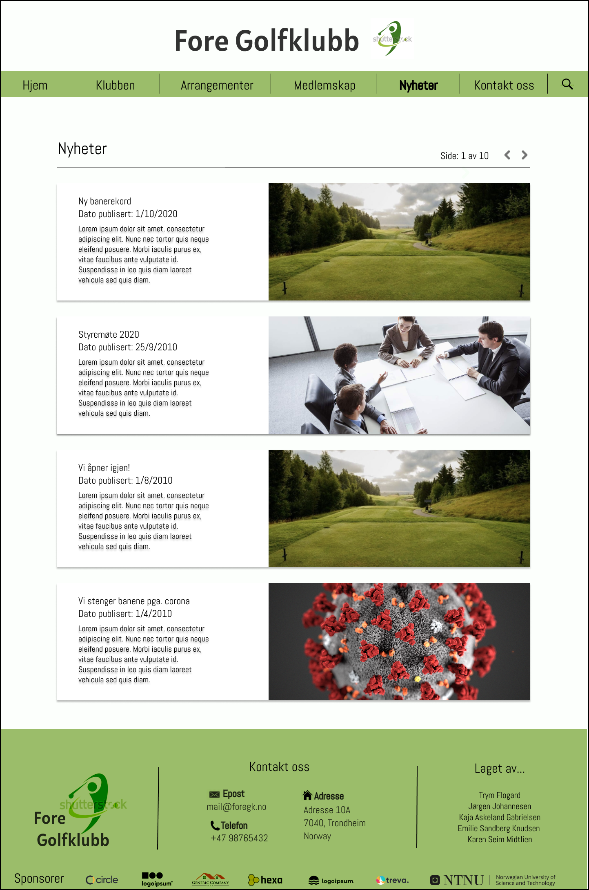

Administrative detaljer
(Imaginær) klient: Franz Ferdinand von Mulligan
Rolle i Fore golfklubb: Eier
Hensikt, Mål og og Målgruppe
Hensikten med nettsiden er å informere om klubben, tiltrekke nye medlemmer og gi en god brukeropplevelse til allerede eksisterende medlemmer. Siden skal gi generell informasjon, som baneforhold, priser og vilkår for medlemskap, hvordan ta kontakt og lokasjon.
Målet er å gi en generelt god brukeropplevelse for alle som besøker Fore GKs nettside. Ved hjelp av et oversiktlig og brukervennlig grensesnitt skal nettsiden nå ut til både unge, som er glade i godt designede nettsider, og eldre, som foretrekker enkelhet.
Det er hovedsakelig golfinteresserte som vil bli eksponert for nettsiden vår. Dette kan være folk som vil prøve golf for første gang, samt erfarne spillere som ønsker å teste banen. Det er ingen hemmelighet at mange eldre er glade i golf og ofte mindre data-kyndige. Vi ønsker derfor å vektlegge enkelhet i designet for å unngå at noen føler på vanskeligheter.
Navigasjonsstruktur
Alle sider er tilgjengelig fra alle andre sider, med unntak av nyhetsartikler. Navigering gjøres ved hjelp av hyperlenker til andre sider og/eller ved hjelp av navigasjonsbaren. Det skal også være mulig å navigere til tidligere besøkte sider ved hjelp av historikken i nettleseren/klienten.
Navigering til individuelle nyhetsartikler gjøres gjennom nyhetsartikkel komponenten, eller på “Nyheter” siden.
Ellers vil avstanden fra en gitt node (dokument) til hvilken som helst annen node, referert i navigasjonsmenyen, være én (1). Dette vil også gjelde for eventuelle fremtidige utvidelser/påbygg av nettsiden.
Det skal også til enhver tid være klart for brukeren hvilken side han/hun er på. Derfor må dette komme tydelig frem i brukergrensesnittet.
Layout og utseende
For at nettsiden vår skal være mest mulig brukervennlig har vi valgt et stilrent og enkelt design. Navigasjonsbaren øverst på siden skal gjøre nettsiden enkel å navigere, og skal alltid være synlig for brukeren. Også i de følgende universelle design-valgene er brukervennlighet høyt vektlagt. Dette er med tanke på at målgruppen til Fore Golfklubb i betydelig grad er eldre mennesker - som kan ha mindre erfaring med teknologi.
Designvalg som er universelle for siden
- Tekst: For et ryddig utseende har vi valgt å ha all tekst i samme farge og skrifttype: teksten skal være svart, i fonten Abel (“Open sans” som backup). Eneste unntak er overskriften i headeren, som er i fonten Alatsi (“Righteous” som backup). Videre skal samme typer elementer på siden ha lik skriftstørrelse. Overskriftene på hver side (H2) skal ha skriftstørrelse 41px, underoverskrifter (H3) 36px og “standard” tekst innenfor paragrafer 24px.
- Fargevalg: For å få god flyt på nettsiden har vi valgt å bruke nokså få farger, slik at de samme fargene går igjen på de ulike sidene. Bakgrunnen skal være tilnærmet hvit (FCFFFC) for alle sidene. Dette gir en fresh look – men er mer behagelig for øynene enn om en bruker en helt hvit farge. Navbar og footer skal ha samme grønn-farge (9BBD6A).
- Linker: Linkene i navigasjonsbaren skal ha hoover-effekt. Når pekeren er over teksten(overskriften) skal teksten bli bold.
- Navbar: Navigasjonsbaren skal ligge horisontalt på toppen av siden. For en best mulig brukeropplevelse skal posisjonen være fixed, slik at den alltid vises øverst på brukerens skjerm. Når brukeren er inne på den aktuelle siden vil også linken være bold. Ex: Når brukeren er inne på siden «kalender» vil «kalender» være markert i bold i navigasjonsbaren. Slik får bruker enkelt oversikt over hvor på nettsiden en befinner seg.
- Footer: Footeren skal inneholde kontaktinformasjon og adresse, golfklubbens logo, hvem som har laget nettsiden og ulike sponsorer av golfklubben.
Innhold
Hjemmeside
Dette er den første siden brukeren kommer til, og det legges derfor vekt på at den ser tiltalende ut og inneholder det som er mest relevant for våre brukere. Det første brukeren ser vil være et bilde i full bredde som vekker oppmerksomheten og frister brukeren til å ville spille golf på vår bane.
Det skal være brukervennlig og enkelt for brukeren å navigere seg frem til informasjon på siden. Derfor har vi en navigasjons-bar øverst som er tilgjengelig fra alle steder på nettsiden. Hjem-siden er plassert lengst til venstre i navigasjons-baren, fordi dette er det mest naturlige og logiske for brukeren. Brukeren kan også komme seg tilbake til forsiden ved å klikke på logoen til klubben.
Lenger ned på forsiden finner man dagens status for golfbanen; værmelding, baneforhold og åpningstider. Dette er informasjon vi ser på som relevant for en bruker som klikker seg inn på nettsiden vår, og det skal derfor ikke være vanskelig å finne frem til. Forsiden oppdateres jevnlig med nyheter fra klubben og andre relevante nyheter, som for eksempel resultater fra nylige konkurranser/mesterskap. Dette vil være i form av “bokser” med bilder og tydelige overskrifter, slik at det er enkelt å forstå hva artiklene omhandler. Dersom man klikker på en av boksene, føres brukeren videre til den spesifikke nyheten på siden “nyheter”.
I footeren finner brukeren sponsorene til klubben og den mest relevante kontaktinformasjonen.
Klubben
“Klubben”-siden er for brukeren som ønsker ekstra informasjon om klubben og banen. Her vil man kunne lese om historie og daglig drift, og i tillegg å se en baneguide.
Denne siden får mye tekst, vi vektlegger derfor tydelige overskrifter og gjør det enkelt for leseren å finne det den er ute etter. Målet er å informere om klubben, innenfor feltene som folk er interessert i. Drift og historie kan være viktig for folk når de skal velge klubb, og vi ønsker med denne siden å vise gode sider ved klubben og motivere til å bli medlem.
Baneguiden er en oversikt over alle hullene på banen, hva slags tilstand det er i, lengde og hvilket par det er. Siden denne kan bli sentral for å tiltrekke spillere er det viktig at den er pent designet, ikke loader for tregt og gir god informasjon. Baneguiden vil fungere som en bildeserie hvor man kan bla mellom de forskjellige hullene med pilene eller hoppe til hvilket som helst hull med menyen over.
Arrangementer
Her skal brukeren enkelt kunne få oversikt over kommende arrangementer og kurs på golfklubben. Dette har vi løst ved å legge til en kalender, der man ser aktivitetene når man holder musepekeren over en valgt dag. For å melde seg på et arrangement sendes en mail til klubben.
Det vil også være en egen oversikt lenger ned på siden over det som arrangeres på faste dager i uka.
Medlemskap
Øverst på denne siden er et utfyllingsskjema for medlemskap i golfklubben. Vi har valgt å plassere det øverst fordi vi ønsker nye medlemmer til klubben og det skal ikke være vanskelig for brukeren å finne ut hvordan man melder seg inn. Dette er et enkelt skjema og det skal ta kort tid å registrere et medlemskap. Derfor har vi valgt kun å inkludere det mest relevante; kontaktinformasjon og annen informasjon som kan påvirke prisen for et medlemskap. Det vil komme opp en beskjed om at brukeren er registrert når brukeren trykker på “Send inn”-knappen.
Lenger ned på siden finner brukeren informasjon om medlemskap i golfklubben, som f.eks. priser og ulike medlemskapsfordeler.
Kontakt Oss
Denne siden skal inneholde kontaktinformasjonen til golfklubben (telefon/e-post/adresse). Det skal også være muligheter for å sende inn spørsmål direkte på nettsiden via et kontaktskjema. Kontaktskjemaet vil bestå av tre tekstbokser som brukeren må fylle ut; en for navn, en for e-post og en for brukerens henvendelse. Formålet med kontaktskjemaet er å gi brukeren flest mulig valgmuligheter når det kommer til å kontakte golfklubben, samtidig som det kan forenkle prosessen. For å opprette kontaktskjemaet vil det bli brukt Javascript.
Nyhetsarkiv
På denne siden skal brukeren enkelt få oversikt over alle nyhetsartikler som siden har publisert. Den blir som et slags arkiv slik at kunder kan søke seg tilbake i klubbhistorikken. Siden vil sortert etter bokser, hvor hver av boksene inneholder informasjon om en nyhetsartikkel. Boksen skal ramme nyhetsoverskrift, publiseringsdato, en kort beskrivelse eller ingress av artikkelen og bilde. Artiklene er sortert etter nyeste til eldste. Det vil også være mulighet å bla seg frem og tilbake ved å trykke på to piler.
Nyhet
På denne siden kommer man hvis man klikker seg inn på en av boksene på forsiden, som skal demonstrere hvordan en nyhetsartikkel på siden vil se ut. Den vil bli presentert svært enkelt med overskrift, publiseringsdato, selve artikkelen og bilde.
Minimumskrav
Abstrakt
For at alle skal kunne få mest mulig ut av prosjektoppgaven, er det viktig at alle får prøve seg på å lage en komponent. Det er imidlertid viktig at resten av gruppen er med og bistår når noen trenger hjelp. En av måtene vi skal sørge for at dette blir mest mulig smertefritt, er å benytte oss av “featurebranches” i git. Dermed kan man enkelt bytte fra å jobbe med en komponent til en annen.
Vi har tildelt de ulike applikasjonene en prioritet som reflekterer viktighetsgraden. Disse er HØY, MIDDELS, LAV.
Applikasjonene markert med høy prioritet burde anses som de 4 distinkte JavaScript applikasjonene som kreves av oppgaven, ekskludert navigasjonsmenyen som er css.
Navigasjonsmeny
Formål
For at brukeren skal kunne navigere mellom sider på nettsiden, har vi valgt å benytte oss av en delt navigasjonsmeny. Fordelen med dette er at det vil være enkelt for brukeren å kartlegge og navigere mellom innholdet på nettsiden.
Ideer om- og drøfting av implementering
Navigasjonsmenyen er en komponent som deles av alle sider. Derfor kan det være hensiktsmessig å benytte seg av gjenbruk. Dette kan gjøres ved at nettsiden implementerer en Single Page Application arkitektur ved hjelp av template-elementer, eller at navigasjonsbaren genereres dynamisk for alle sider ved hjelp av injisering hos klienten.
Animasjoner og hendeshåndtering kan implementeres i CSS.
Skjemavalidering - "Bli medlem" og "Kontakt oss"
Formål
For at brukeren skal få visuell tilbakemelding om evt. feil under innsending av skjema, krever dette en javascript rutine som tar seg av dette. Dette gir også mulighet til å gi visuell tilbakemelding til brukeren når skjemaet er innsendt.
Ideer om- og drøfting av implementering
Nettsiden vil inneholde skjemaer i både “Bli medlem” og “Kontakt oss”. Dette krever inndatavalidering og -sanitisering, slik at brukeren får tilbakemelding dersom noen av inndatafeltene har ugyldig inndata, eller hvis de er fylt ut feil. Dette kan gjøres ved hjelp av boolske betingelser eller regex. Dette krever også at skjemaet eller inndata elementene gir visuell tilbakemelding til brukeren.
"Værmelding"
Formål
Vi ønsker at besøkende på nettsiden skal få all informasjon de trenger for å planlegge sin dag på golfbanen. Derfor kan det være hensiktsmessig å informere brukeren om været på golfbanen.
Ideer om- og drøfting av implementering
Implementering av en værmelding-widget vil kreve data fra en tredjepart, f.eks. Yr. Yr har en offentlig API som vi kan benytte oss av for å hente værdata. Et annet alternativ kan være å bruke en “mock”-API som returnerer et statisk JSON objekt fra webserveren.
Denne dataen må så være representert på en hensiktsmessig måte for brukeren. Dette kan gjøres ved hjelp av grafikk eller tekst.
"Kalender"
Formål
Formålet med kalenderen er å gi besøkende og medlemmer informasjon om kommende hendelser og arrangementer hos klubben.
Ideer om- og drøfting av implementering
Denne dataen må presenteres for brukeren på en grafisk måte. Dette vil kreve CSS. Her kan man f.eks. ta utgangspunkt i table-elementet for å stille denne om til en tradisjonell kalender, hvor hver kolonne representerer ukedager, og hvor radene representerer uker.
For å hente informasjon om hendelser, kan man i likhet med de tidligere komponentene benytte seg av en “mock”-API som returnerer et JSON objekt.
Nyhetsartikler på forside og nyhetsarkiv
Formål
Klubben ønsker å promotere hendelser ved hjelp av nyhetsartikler. Dette er også gunstig for SEO. Vi ønsker at de nyeste nyhetsartiklene skal vises på forsiden, men vi ønsker også å gi brukeren mulighet til å se på eldre nyhetsartikler. Dette gjøres henholdsvis gjennom forsiden og nyhetsarkivet.
Ideer om- og drøfting av implentering
For at nyhetsartiklene på forsiden alltid skal være oppdatert, må nyhetsartiklene være dynamisk generert. For å holde oss innenfor kravene til oppgaven, må dette implementeres i JavaScript, med en “mock”-API, f.eks. ved å hente en statisk JSON fil fra webserveren.
Hvis nyhetsartiklene er representert som en array fra APIen, kan man dermed hente frem de 4 nyeste artiklene på en enkel måte for å vise disse frem på forsiden. Likegyldig, kan man gjøre tilsvarende på “Nyhetsarkiv”, ved hjelp av samme rutine.
"Paginator" på nyhetsarkiv
Formål
For å gjøre nettsiden responsiv, og for å begrense visuell støy på siden, har vi valgt å kun vise (maksimum) 4 nyhetsartikler samtidig i nyhetsarkivet (se mockup).
Ideer om- og drøfting av implentering
Når brukeren klikker på piltastene øverst til høyre, skal de fire neste, eller de fire forrige, nyhetsartiklene vises. For å gjøre dette kan man plukke ut de fire første objektene i nyhetsartikkel-arrayen returnert av APIen, de fire neste etter det, osv.
"Baneguiden"
Formål
For å gi nye besøkende informasjon om banen, har vi valgt å ha en guide som inneholder informasjon om de ulike hullene.
Ideer om- og drøfting av implentering
Forventet oppførsel av baneguiden er at hvert tall i tabellen (se mockup) representerer ett hull. Når brukeren klikker på et tall, skal informasjon om det korresponderende hullet vises. Brukeren skal også kunne bla til neste eller forrige hull ved hjelp av pilene på høyre og venstre side.
Her kan man representere hvert hull som et objekt en array hvor indeksen representerer hullnummeret. Objektet kan være lagret i baneguide.js.
Plan
Mappestruktur
- home.html
- arrangementer.html
- medlemlskap.html
- nyhetsarkiv.html
- nyhet.html
- kontakt_oss.html
- scripts/
- bli_medlem.js
- kontakt_oss.js
- vaermelding.js
- kalender.js
- common.js
- form.js
- baneguide.js
- nyheter.js
- nyhetsarkiv.js
- hjem.js
- css/
- style.css
- img/
- logo.png
- klubbhus.png
- forside.png
- nyhet.png
- hull_x.png
- telefon_ikon.png
- post_ikon.png
- hus_ikon
- api/
- nyheter.json
- kalender.json
| Filnavn | Beskrivelse | Ansvarlig | Frist |
|---|---|---|---|
| home.html | Hjem-siden | Kaja | 22.10.20 |
| klubben.html | Info om klubben + baneguide | Jørgen | 26.10.20 |
| arrangementer.html | Oversikt over klubbens arangementer | Kaja | 26.10.20 |
| medlemskap.html | Siden for å bli medlem | Emilie | 26.10.20 |
| nyhetsarkiv.html | Oversikt over alle nyheter | Karen | 26.10.20 |
| nyhet.html | Mal for enkeltnyheter | Karen | 26.10.20 |
| kontakt_oss.html | Side for å kontakte klubben | Emilie | 26.10.20 |
| navigasjonsbar.html | delt navbar for alle sider | Trym | 26.10.20 |
| navigasjonsbar.js | Navbar-modul importert av common.js | Trym | 26.10.20 |
| common.js | (Evt.) Detle ruitner for alle sider | Felles | 26.10.20 |
| form.js | Delte rutiner for skjema | Jørgen | 26.10.20 |
| baneguide.js | rutiner for baneguiden | Emilie | 26.10.20 |
| nyheter.js | Rutiner for nyheter. Deles av hjem-siden og nyhetsarkivet. | Karen | 26.10.20 |
| nyhetsarkiv.js | Rutiner for paginator | Karen | 26.10.20 |
| style.css | CSS-fil som inneholder all styling | Felles | 22.10.20 |
| bli_medlem.js | Rutiner for validering/tilbakemelding av skjema. | Kaja | 26.10.20 |
| kontakt_oss.js | Rutiner for validering/tilbakemelding av skjema. | Emilie | 26.10.20 |
| vaermelding.js | Implementering av værmelding-widget. | Trym | 26.10.20 |
| hjem.js | Rutiner for å vise de 4 nyeste nyhetene | Trym | 26.10.20 |
| kalender.js | Rutiner for kalenderen | Jørgen | 26.10.20 |